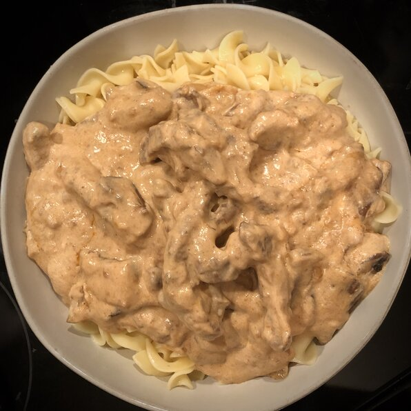

Nana's Beef Stroganoff

Discription
Beef Stroganoff dish
Ingredients
- 1 tablespoon all-purpose flour
- ½ teaspoon salt
- 1 ½ pounds beef sirloin, cut into 1/4-inch wide strips
- 2 tablespoons butter
- 1 cup mushrooms
- ½ cup chopped onion
- 1 clove garlic, crushed
- 2 tablespoons butter
- 3 tablespoons all-purpose flour
- 2 tablespoons tomato paste
- 1 ¼ cups chilled beef stock
- 1 cup sour cream
- ¼ cup dry white wine
Steps
- Shake 1 tablespoon flour with salt in a large, resealable plastic bag until combined; add beef and shake to coat.
- Melt 2 tablespoons butter in a skillet over medium-high heat. Brown beef in the hot butter, about 3 minutes per side. Stir mushrooms, onion, and garlic into beef; cook and stir until garlic is fragrant, 3 to 4 minutes. Transfer beef and vegetables to a bowl, leaving drippings in skillet.
- Melt 2 more tablespoons butter in skillet over medium heat. Cook and stir 3 tablespoons flour in the hot butter until smooth; stir tomato paste into flour mixture. Whisk beef stock into mixture and cook, stirring constantly, until sauce is thickened and bubbling, about 5 minutes.
- Return beef and vegetables to skillet and stir to coat with sauce. Reduce heat to very low and simmer until beef is tender, 2 to 3 hours. The longer it cooks, the more tender the meat will be. Just before serving, stir sour cream and white wine into beef mixture and heat through. Do not boil.